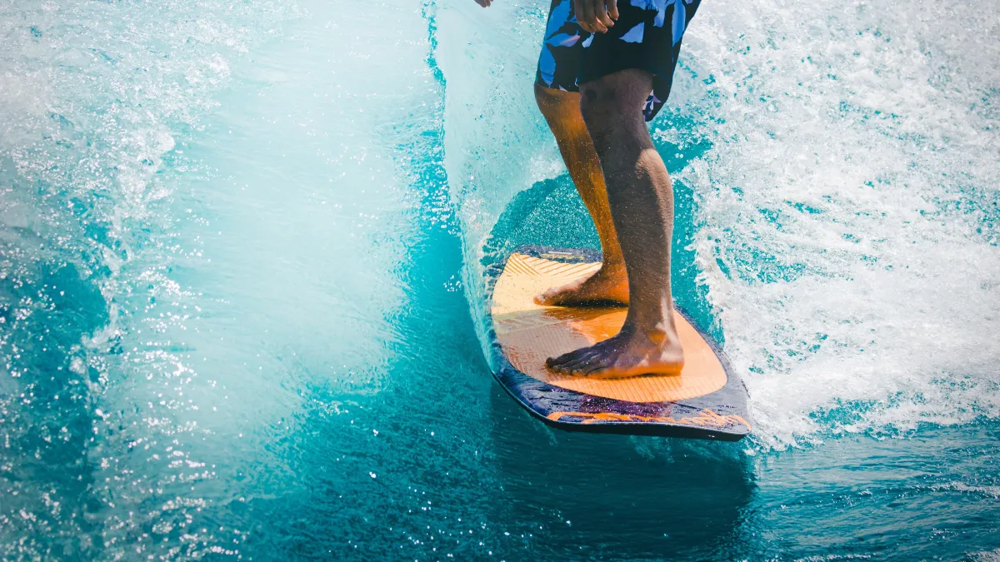

Surf
O surfe (do inglês surf) é um esporte de aventura na natureza, realizado na superfície marítima e caracterizado pelo deslize nas ondas por meio de uma prancha. A narrativa histórica mais difundida acerca da modalidade atribui seu surgimento a pescadores da Polinésia (conjunto de ilhas do Oceano Pacífico). Assim, a prática teria surgido do uso de tábuas de madeira por pescadores nativos para retornarem das embarcações até a margem. Embora introduzido no mundo ocidental por James Cook, o surfe tornou-se conhecido ao redor do mundo por meio do nadador e embaixador havaiano Duke Kahanamoku, após representar os EUA na natação das Olimpíadas de Estocolmo 1912. Com isso, Duke agregou visibilidade à prática, levando-a consigo a países como Austrália e Nova Zelândia e potencializando a disseminação e a popularização da modalidade enquanto prática esportiva.
